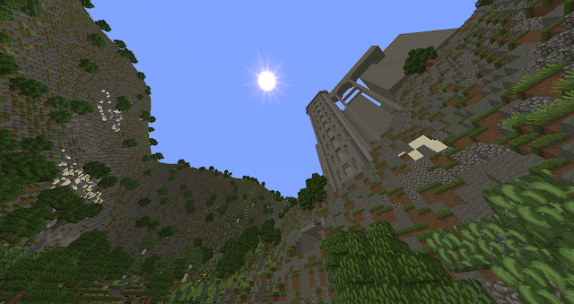
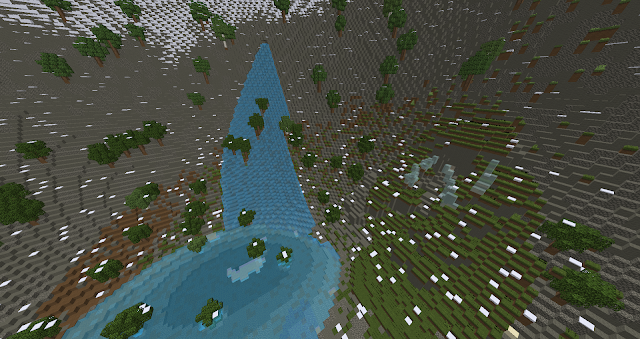

(May 7, 2022) Some pretty photos for you.
Anyways, first, I should establish where these places are. Both are on Diambera,
in the Skylands, in the Bladonian cluster. Akta, however, is a whole island, while the Alekian Mountains are a
part of the Anican island.
DIAMBERA
>BLADONIAN ISLAND CLUSTER
>AKTA
>ANICA
>>ALEKIAN MOUNTAINS
Anyways! The pretty photos? They're
Akta(INC) base... in the Alekian Mountains... on Anica.*
Very confusing, right?
The original purpose of Akta was to be a base for my character TC (a young
character based on the Minecraft Creeper with red hair and a short fuse) but it ended up fizzling out because I
couldn't figure out why a child would have a whole island. So, there are a coulile of things I can do with
Akta(Island) at this point.
1. Akta base really is a part of the Alekian mountains. If this is the case, Akta
should have no reason to exist, or maybe it is just a storage place for one of the other islands. Bladon sure
would need military space and a lot of space in general, being a main trade island. If Akta is obliterated, that
would leave the Bladonian cluster with four islands, like the Hijken island cluster. It would surely limit them
on space, which would be an interesting challenge for them.
2. Akta base is a part of the Akta island, making it so that Akta either has a
mountains of their own or is also the Alekian mountains... which isn't as confusing as I initially thought. This
would make the theory of the Skylanders raising ground from the Mainlanders more plausible, adding to the
tensions of the two groups. That would also be bad for trade- terrible, actually. It would shift some tides for
sure.
Addendum: The Alekian mountains are a part of both Akta and Anica- both
Skylands split off from the same place on the surface. I think I like making things more complicated for
myself...